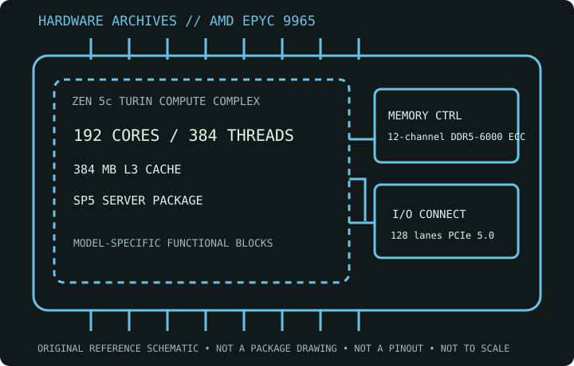

[ SERVER CPU // ZEN 5c TURIN // 2024 ]
AMD EPYC 9965
5th Generation EPYC 9005 Series / Turin Dense; 192 cores / 384 threads, 2.25 GHz base / up to 3.7 GHz boost, 384 MB L3, 500 W TDP, SP5, 12-channel DDR5-6000 ECC, 128 lanes PCIe 5.0. Match the exact SKU and generation to the server platform before service or deployment.

MODEL IDENTIFICATION: This record describes AMD EPYC 9965. Verify the complete model name, suffix and package marking against the cited AMD specification and the platform manufacturer’s documentation; related EPYC SKUs can differ in core count, power, socket support or multiprocessor capability.
Recorded specifications
| Cataloged model | AMD EPYC 9965 |
|---|---|
| Generation / microarchitecture | 5th Generation EPYC 9005 Series / Turin Dense; Zen 5c CPU cores. |
| Core / thread count | 192 cores / 384 threads |
| Frequency | 2.25 GHz base / up to 3.7 GHz max boost |
| Cache | 384 MB L3 |
| Thermal design power | 500 W TDP (published nominal processor rating) |
| Socket / package | SP5 |
| Memory | 12-channel DDR5-6000 ECC; verify supported DIMM type, rank and capacity in the server QVL. |
| PCI Express | 128 lanes PCIe 5.0 |
| Socket scaling | 1P / 2P capable |
Server-platform compatibility
SP5 server platform specifically designed and qualified for the 500 W EPYC 9965 dense-core SKU. Verify 9005-generation BIOS support, system vendor CPU list, chassis power and thermal design, SP5 cooler/carrier, ECC DDR5 QVL and population, and permitted one- or two-socket configuration before installation.
- Confirm the exact processor SKU appears on the system or motherboard manufacturer’s CPU support list, with the required BIOS/AGESA version and board revision.
- Check package/carrier, cooling and chassis air path, power delivery, memory QVL and channel population, firmware, and permitted socket configuration. Shared socket names do not establish generation or system compatibility.
- Before handling, follow the server vendor’s service procedure and use the correct carrier, socket tool and torque sequence. Record OPN, stepping, firmware, DIMM population and thermal configuration for archival testing.
Sources & further reading
- AMD — AMD EPYC 9965 product specificationsManufacturer model reference for SKU-specific specifications. Match the complete part number and product revision when checking fit.
- AMD — Processor specifications catalogAMD manufacturer catalog for cross-checking product-family specification data against the exact model.
- AMD 5th Gen EPYC 9005 Series Product BriefAMD manufacturer generation/family material for architecture and platform context; use the model specification and system-vendor support list for final configuration.
- AMD — Support and documentationOfficial AMD documentation and support entry point. Server motherboard and system-vendor CPU support lists remain authoritative for host compatibility.
Maximum boost is a peak operating specification, not a guaranteed sustained all-core frequency. Actual operation depends on cooling, firmware, workload and the server vendor’s configured limits.